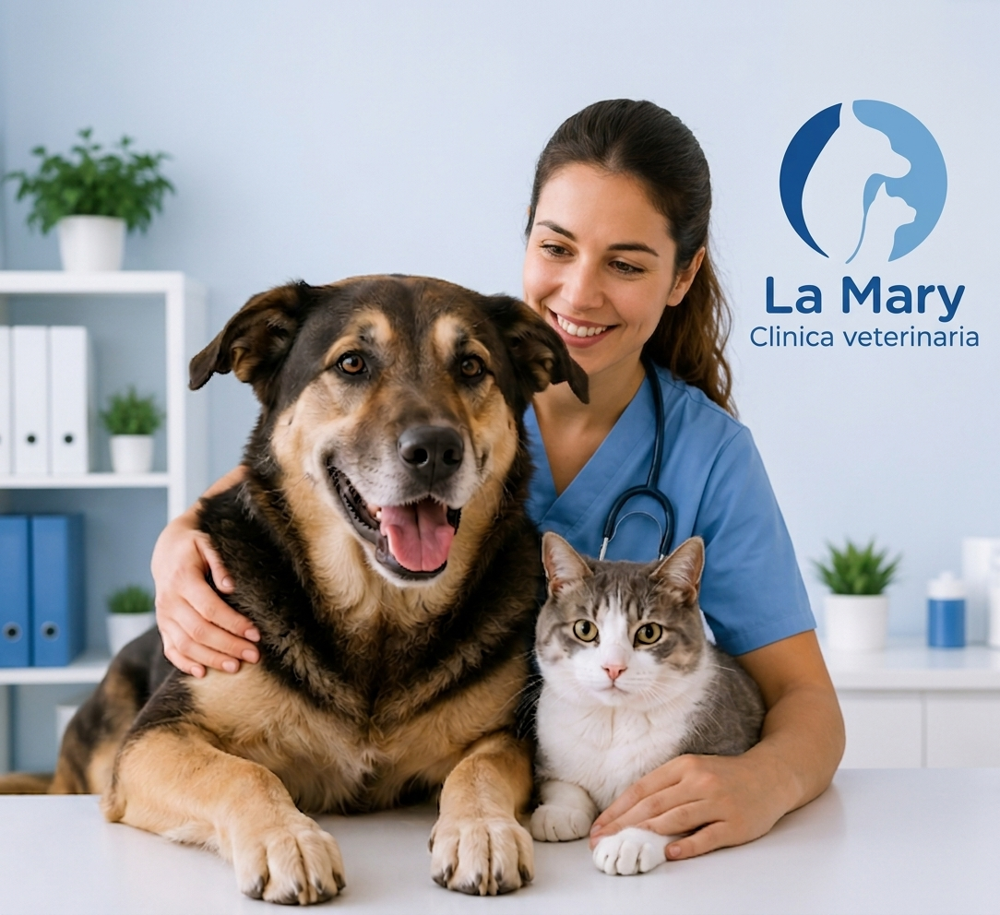
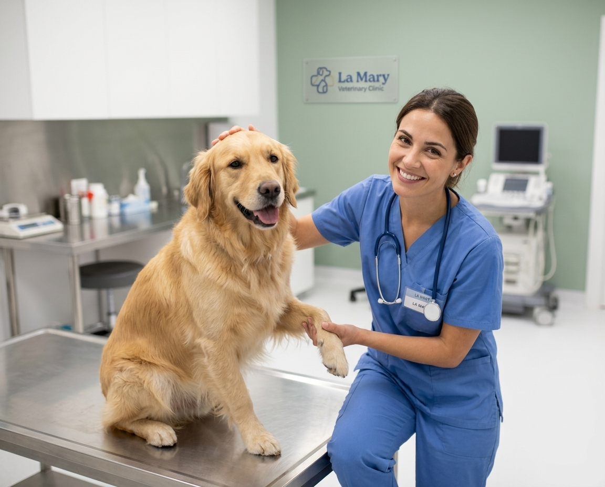
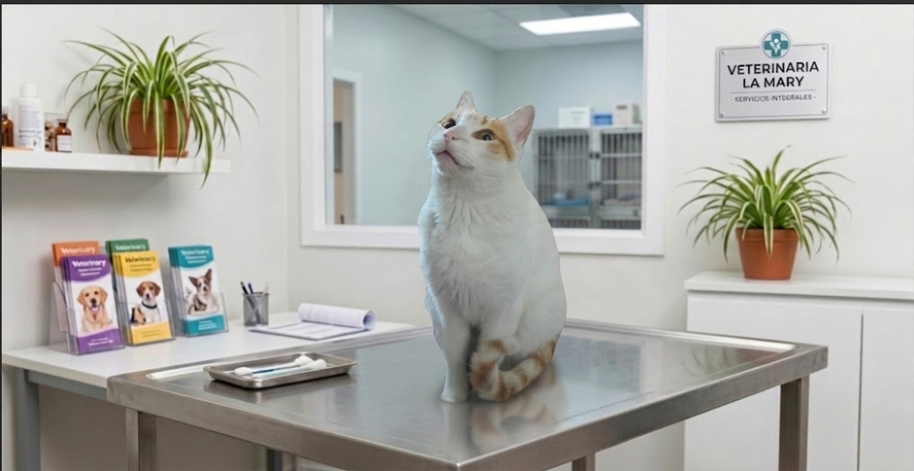
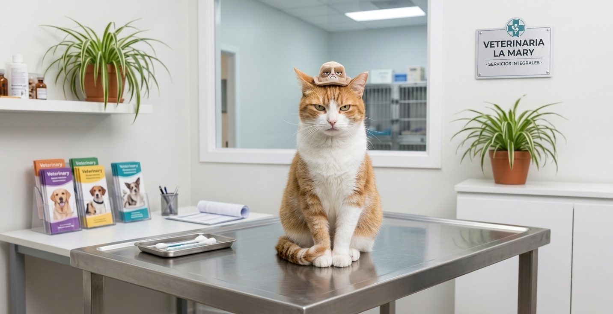
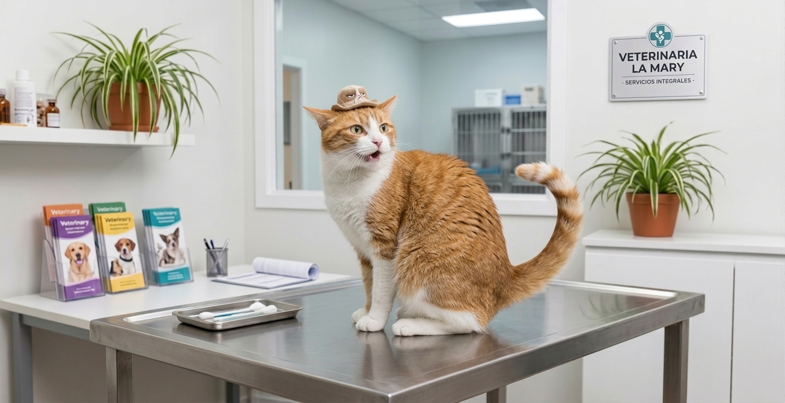
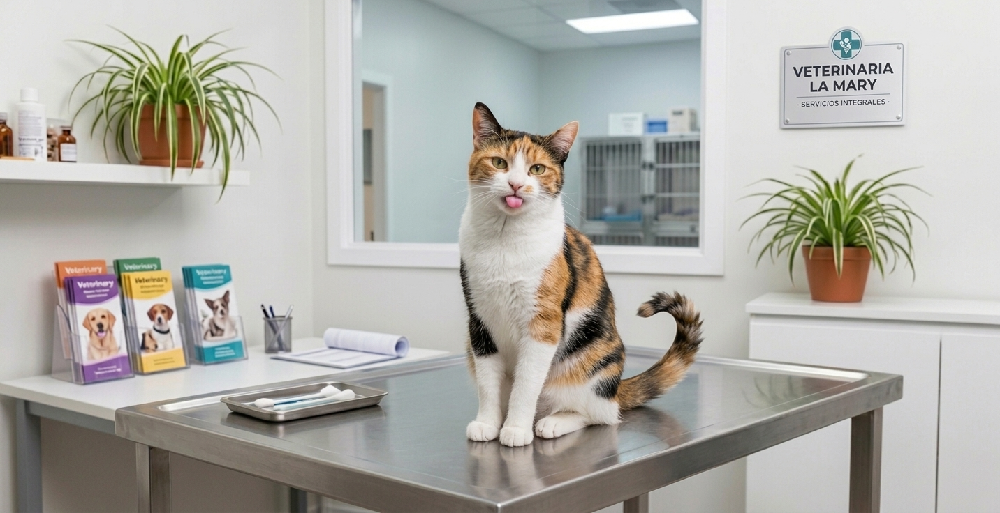

Consultas clínicas
Chequeos generales, diagnóstico y seguimiento para cuidar la salud de tu mascota durante toda su vida.
Cuidamos a tu mascota como en casa
En La Mary cuidamos la salud de tus mascotas en cada etapa de su vida, con un equipo especializado e integral. En La Mary no solo contamos con profesionales capacitados en cada área, sino con un equipo humano que trata a cada paciente con amor y paciencia.

Chequeos generales, diagnóstico y seguimiento para cuidar la salud de tu mascota durante toda su vida.
Planes de vacunas y desparasitación al día, adaptados a la edad y el estilo de vida de tu mascota.
Baño, corte e higiene para que tu mascota esté cómoda, sana y luciendo su mejor pelaje.
Procedimientos quirúrgicos e internación con seguimiento constante en instalaciones equipadas.
Contanos qué necesita tu mascota y te damos un turno a la brevedad.
M
TURNOS Y URGENCIAS 24 H
Consultas, vacunación y cirugía en un lugar tranquilo, con un paciente por turno y tiempo para explicarte cada paso.


Control general

Vacunación

Recuperada

Chequeo anual